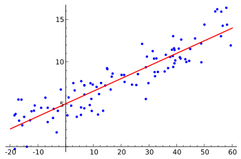

El análisis por regresión es un proceso que permite estimar la relación entre dos o más variables. En este proceso se parte de una o más variables conocidas (variables independientes o predictoras) y se busca construir un modelo que prediga el comportamiento de otra variable desconocida, llamada variable dependiente. Típicamente se busca calcular el valor medio de la variable dependiente para unos valores fijos de las variables independientes.
El propósito de la regresión lineal es obtener una línea recta que, en cada punto del eje X (para cada valor del predictor) tenga un valor medio sobre los datos reales de la muestra. Como es lógico, esto no es posible para cada conjunto de datos.